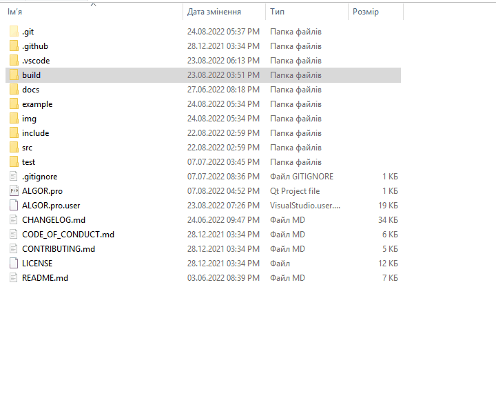

|
ALGOR 1.0.0.0
Library for processing and sorting data structures
|


| |
|
ALGOR 1.0.0.0
Library for processing and sorting data structures
|
|
| |
A library for processing and sorting data structures.
In search of sorting algorithms and explanations in the form of a code, I often came across large codes with a bunch of unnecessary things not related to the sorting algorithm (such as testing) and, in principle, the code contained variables not with normal names, but with names like A, B, C - the style of the code is broken (and sometimes even terrible), sometimes you can find out of order tabulation and there are a bunch of other factors that make the code unreadable and inaccessible for understanding. I spent a lot of time to understand these algorithms and wrote this library, firstly, so as not to write the same thing every time, but simply connect the library and use the ready-made code, and secondly for other people who are just learning algorithms, that I could easily figure it out: the code contains only the necessary methods, they are in order, the code I try to optimize, the style is not broken, and most importantly, thanks to normal names, the code is clear, readable and suitable for learning algorithms.
The full text of the license can be found at the following link.
Copyright © 2021-2022 Kalynovsky Valentin. All rights reserved.
Licensed under the Apache License, Version 2.0 (the "License"); you may not use this file except in compliance with the License. You may obtain a copy of the License at
http://www.apache.org/licenses/LICENSE-2.0Unless required by applicable law or agreed to in writing, software distributed under the License is distributed on an "AS IS" BASIS, WITHOUT WARRANTIES OR CONDITIONS OF ANY KIND, either express or implied. See the License for the specific language governing permissions and limitations under the License.
The library implements the next functionality:
For repository documentation, please use the following link.
The library is intended for compilation and dynamic linking. A compiled Windows version of the library is available in the release. You can download and extract the archive and:
The hider is announced as follows:
Snippet:
Compiling the program with using and linking with the library on Windows in the IDE, on Windows in the console, and on Linux in the console.
You can assemble the library yourself. How to collect and use it is described below.
The library was written in pure C++ in the Qt IDE, so it is enough to open the .pro file in the IDE, connect Kit and compile the library. Then a separate directory is created with the necessary files ALGOR1.dll and libALGOR1.a.
Compilation via the Qt IDE on Linux was not done, so the author cannot give advice on how to compile the library...
It is preferable to compile the library in the GitBush console (must be installed), since the instructions are given specifically for it. From the library directory, you need to go to build/win/ and run the file there with the command:
In the future, when building programs, you just need to add these (compiled) library files to the programs that use them:
An animated image of a built library.
From the Library directory, you need to go to build/linux/ and launch Make:
The library is installed in the system, so it can be deleted:
An animated image of a built library.
In the appropriate Directory (Build/Win/or Build/Linux/) in the console (on Windows it's all the same gitbush) we launch a Test.sh file:
This file also shows a compilation command with a library.
An animated image of a built library.
All algorithms have been tested by me, but if you have problems using the library, the code does not work, have suggestions for optimization or advice to improve the style of the code and the name - I invite you here and here.
|

